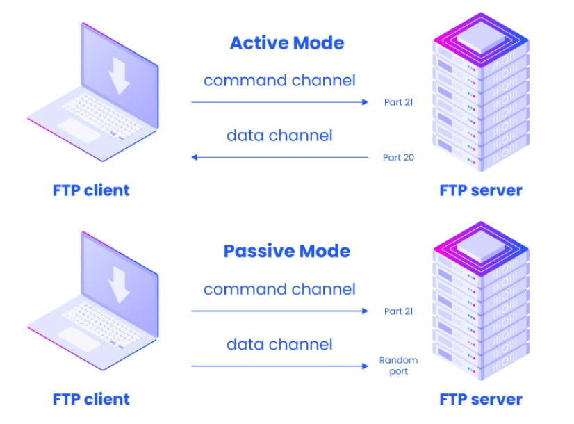

2.4 FTP - File Transfer Protocol
FTP (File Transfer Protocol) is a standard protocol used to transfer files between a client and a server over a network. It operates at the application layer of the TCP/IP protocol suite and allows users to upload, download, delete, rename, and manage files on a remote server.
Connecting to an FTP server
Just run the command ftp $IP (on Linux)
FTP Basics
- FTP was designed to facilitate the transfer of files from one computer to another over a TCP/IP-based network (such as the Internet or an intranet).
- It operates on a client-server model, where the FTP client initiates the connection, and the FTP server accepts and processes the requests.
- FTP is used for things like:
- Uploading a website to a web hosting server.
- Downloading files from an FTP server (such as software, patches, or documents).
- Sharing large amounts of data.
FTP Modes
When your File Transfer Protocol (FTP) server runs behind a firewall or Network Address Translation (NAT) router, your users may sometimes encounter connectivity issues. One of the most common causes of FTP connection issues is the data connection mode being used. The mode can be either active or passive. Certain firewall configurations will only allow FTP connections if the data connection is set to a mode that works with a given configuration.
Note that unlike HTTP or SFTP, FTP uses two channels for communication: a command channel (where commands would go) and a data channel (where the actual data gets transferred).

- Active Mode:
- First, the client sends out a
PORT command (from a random port on its side) to the FTP server on port 21. In the PORT command, the client would specify which port the server should connect back to.
- The server then connects back from port 20 to the client's specified port, allowing for data transfer through this channel.
Here, if the client had a firewall that is configured not to allow connections back to it, the server wouldn't be able to connect. (client devices typically block connections initiated from the outside).
- Passive Mode:
- First, the client sends out a
PASV request (from a random port on its side) to the FTP server on port 21. This tells the sever that it should open a random port on its side.
- The server sends back to the client what port it has opened for connection.
- The client then connects from a random port on its side to the port specified by the server.
Security Concerns with FTP
- Unencrypted Data: FTP sends all data, including usernames and passwords, in plaintext, making it vulnerable to interception by attackers (e.g., using a man-in-the-middle attack).
- Anonymous FTP: Many FTP servers allow anonymous access, where users can log in without a username or password, which can expose sensitive files if misconfigured.
To address these issues, several secure alternatives have been developed, such as:
a. FTPS (FTP Secure)
- FTPS adds SSL/TLS encryption to the standard FTP protocol, protecting the control and data channels from interception.
- It operates similarly to FTP but uses encryption to secure the communication.
- FTPS uses port 990 for the control channel in implicit FTPS mode.
b. SFTP (SSH File Transfer Protocol)
- SFTP is a completely different protocol that runs over SSH (Secure Shell).
- It provides both authentication and encryption for file transfers, making it much more secure than FTP.
- SFTP typically operates on port 22, like SSH.
FTP Response Codes
FTP servers respond to client requests with numeric codes, which indicate the success or failure of commands. Some common response codes are:
- 200: Command successful.
- 220: Service ready.
- 331: User name okay, need password.
- 421: Service not available.
- 425: Cannot open data connection.
- 530: Not logged in (authentication failure).
- 550: Requested action not taken (e.g., file unavailable).
Previous
Next